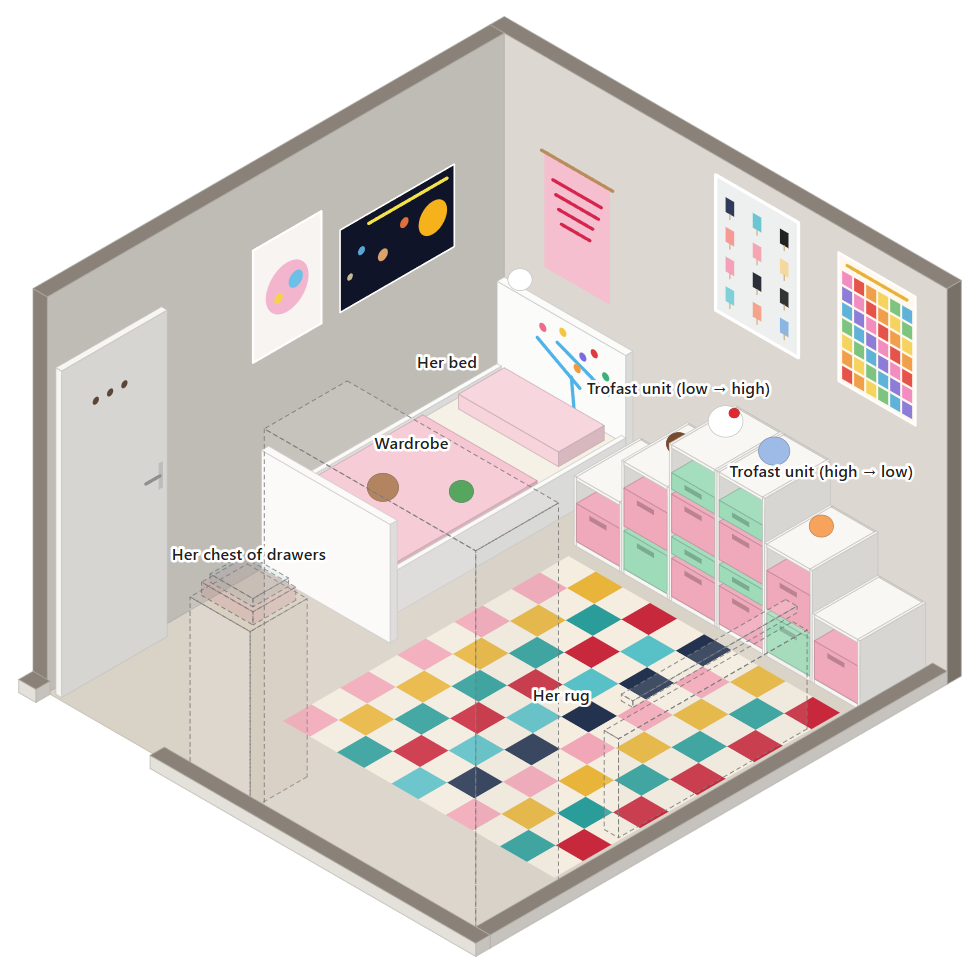
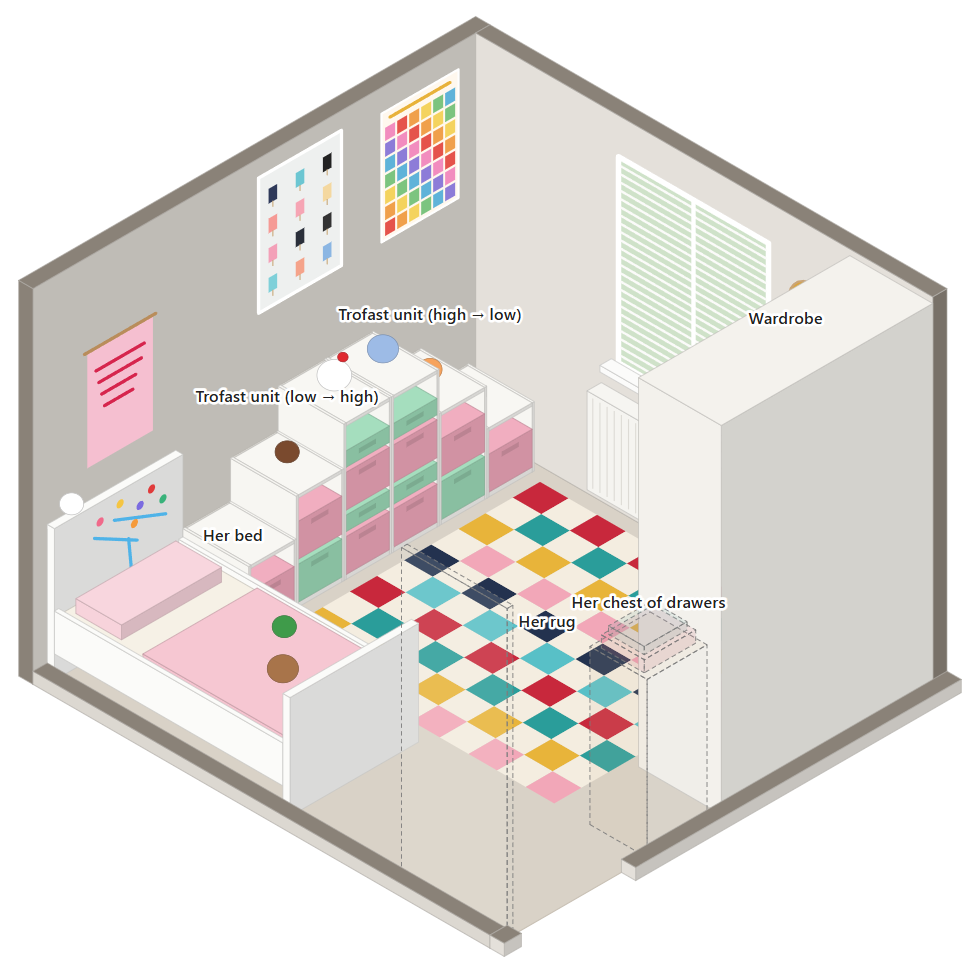
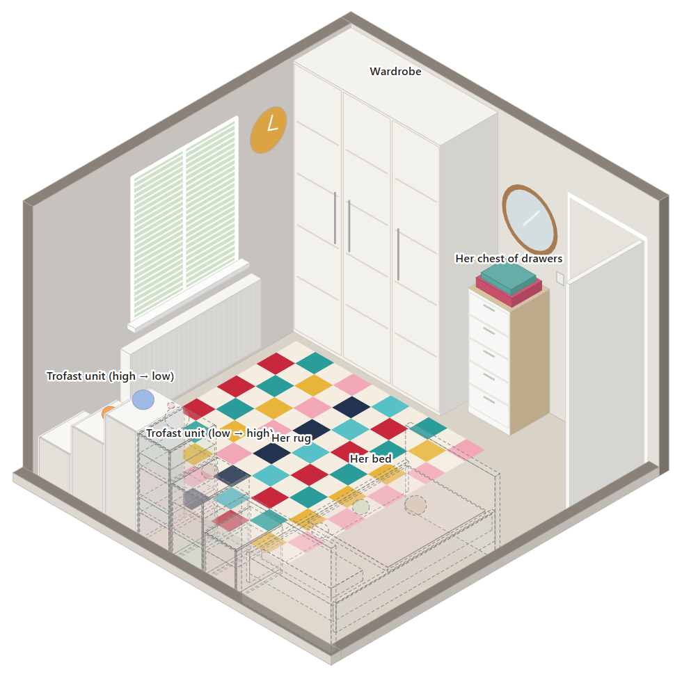
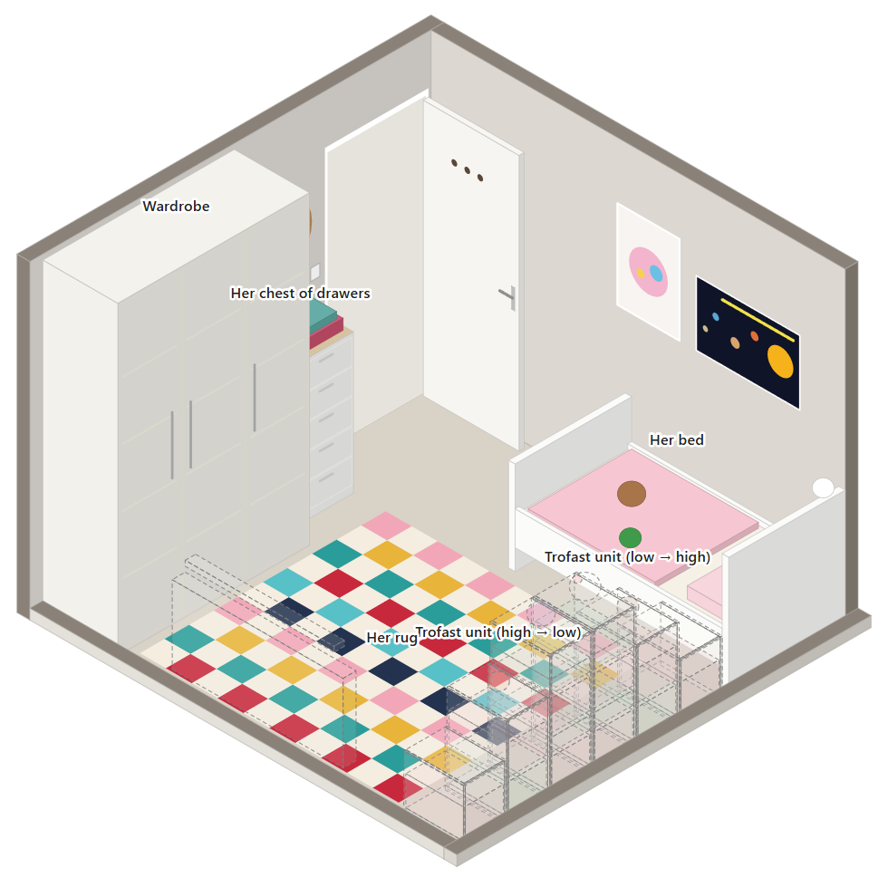
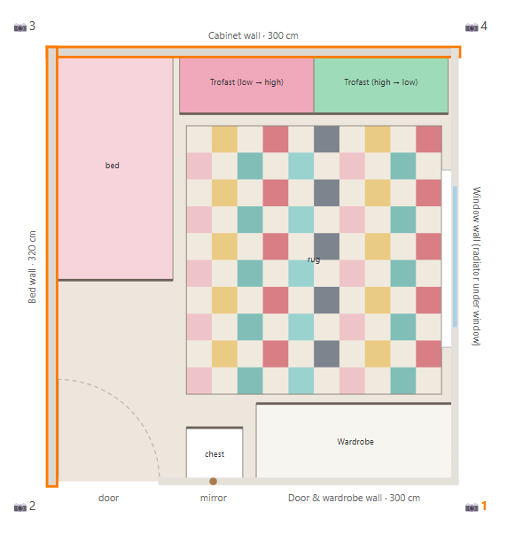

Room swap: brief for Gemini
Use this with your own photos of the room. Long-press a picture to save it, and tap Copy to copy a prompt. To change the layout, use the room planner.
How to use it
- Start a new Gemini chat for each camera angle.
- Attach, in this order: your photo of the room from that angle, then the matching diagram below. You can also add photos of her furniture in her current room.
- Paste Prompt 1 (the furniture swap) and send it.
- Once you're happy with the furniture, attach a paint swatch screenshot in the same chat and paste Prompt 2. Repeat Prompt 2 with each swatch she wants to try.
Tips: if Gemini changes things it shouldn't, reply "Keep everything else exactly as in my photo." Colours on a screen aren't exact, so get a tester pot of the favourite before buying.
Diagrams: one per camera angle





Walls are grey in the diagrams on purpose, because the colour comes from the swatch. Dashed see-through shapes are furniture that would otherwise block the view.
Prompt 1: swap the furniture
I'm redecorating a child's bedroom. The first image is a photo of the room as it is now. The second image is a to-scale diagram of the new furniture layout, seen from roughly the same corner. Any further images show the furniture that is moving in. Create a photo-realistic version of my photo with the new layout. It must look like a real photograph taken from exactly the same position with the same lens, not a 3D render. Keep the room itself exactly as it is: walls and their current paint, ceiling, beige carpet, the door, the window with white shutters, the radiator under the window, the white three-door wardrobe, the round wooden-framed mirror, and the orange and copper ceiling light. Remove: the grey metal double bed and its bedding and cushions, the bedside table and lamp, the white glass-fronted cabinet and the photo frames on top of it, the black-and-white Sonic poster, the black-and-white abstract print, the framed map leaning against the wall, and the step stools. Add, positioned as in the diagram: - A white IKEA Busunge children's bed, 170 cm long and 90 cm wide, with rounded headboard and footboard, pink bedding, a few soft toys and stickers on the headboard. It goes in the same corner as the double bed is now: headboard against the wall where the Sonic poster is, long side against the wall with the abstract print. - Two white IKEA Trofast stepped storage units with pink and mint-green pull-out bins. Each is 100 cm wide and 46 cm deep, with three steps 42, 68 and 95 cm high. They stand side by side along the Sonic-poster wall, to the right of the bed. The first steps up from 42 cm next to the bed to 95 cm; the second steps back down to 42 cm towards the window wall, so the tallest parts meet in the middle. A few soft toys and dolls on top. - A white five-drawer chest of drawers with light oak top and sides (about 42 cm wide and 108 cm tall) against the wall under the round mirror, between the wardrobe and the door. - A multicoloured harlequin (diamond-pattern) rug, about 190 by 200 cm, in the middle of the floor. - Posters: a Scandinavian ice-lolly print titled "Färger" and a colourful "Counting to 100" chart above the storage units; a pink "Though she be but little, she is fierce" print above the head of the bed; a "My First Solar System" poster and a pink Dala horse print on the wall along the bed. Keep the sizes true to the room: it is 300 cm by 320 cm with a ceiling about 240 cm high.
Prompt 2: try a paint colour
Attach the swatch screenshot, then send this. Change the part in [brackets] to the walls you want.
Now repaint [all four walls] in the exact colour of the paint swatch in the image I've just attached. Change only the wall paint. Keep the furniture, posters, lighting, shadows, ceiling, carpet, doors, woodwork and everything else exactly the same, and keep it photo-realistic.
Other options for the [brackets]:
"only the wall behind the head of the bed"
"the wall behind the bed and the wall with the storage units, and leave the others as they are"
"all four walls, with the wall behind the bed in the swatch colour and the others in a very pale version of it"
"only the wall behind the head of the bed"
"the wall behind the bed and the wall with the storage units, and leave the others as they are"
"all four walls, with the wall behind the bed in the swatch colour and the others in a very pale version of it"
Room details, in case Gemini needs them
Room: 300 cm (the Sonic-poster wall) by 320 cm (the wall along the bed), ceiling about 240 cm. Door: in the corner of the wardrobe wall, next to the bed wall. It opens into the room and lies flat against the bed wall, reaching 240 cm from the Sonic-poster wall. Window: on the wall opposite the bed wall, starting 100 cm from the Sonic-poster wall, 105 cm wide, sill 90 cm from the floor, white shutters, radiator underneath. Wardrobe: white, three doors, about 150 cm wide and nearly full height, against the wall opposite the Sonic-poster wall, in the corner by the window wall. Round wooden-framed mirror: on the same wall as the wardrobe, between the wardrobe and the door. Her bed: 170 x 90 cm. Storage: two stepped units, each 100 cm wide, 46 cm deep, steps 42 / 68 / 95 cm high. Chest of drawers: about 42 cm wide, 40 cm deep, 108 cm tall. Rug: about 190 x 200 cm.